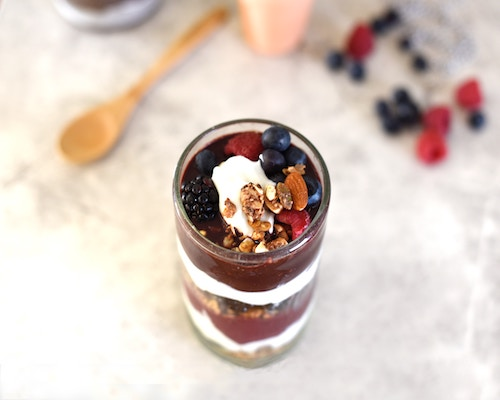

With this grocery list, you'll have all you need to feel great. These foods are packed with nutrients to help fuel you in the best way. Read more to find easy recipes that you can try!

One way to find balance is to incorporate foods from major food groups:
- vegetables
- "Vegetables, including legumes/beans are nutrient dense, low in kilojoules, and are a good source of minerals and vitamins (such as magnesium, vitamin C and folate), dietary fibre and a range of phytochemicals including carotenoids."
- fruit
- "Most fruits are low in energy (kilojoules) and high in fibre and water, making you feel fuller. This reduces the risk of over eating which can cause weight gain. The fibre in fruit is also thought to reduce the risk of some cancers, including colorectal cancer."
- grain
- "Grain foods are mostly made from wheat, oats, rice, rye, barley, millet, quinoa and corn. The different grains can be cooked and eaten whole, ground into flour to make a variety of cereal foods like bread, pasta and noodles, or made into ready-to-eat breakfast cereals."
- lean meat and poultry
- "Foods from this high protein food group (Lean meat and poultry, fish, eggs, tofu, nuts and seeds, and legume/beans) often form the main part of a meal, particularly in the evening or for the largest meal of the day."
- dairy
- "Milk, cheese and yoghurt provide calcium in a readily absorbable and convenient form. They also have various health benefits and are a good source of many nutrients, including calcium, protein, iodine, vitamin A, vitamin D, riboflavin, vitamin B12 and zinc."